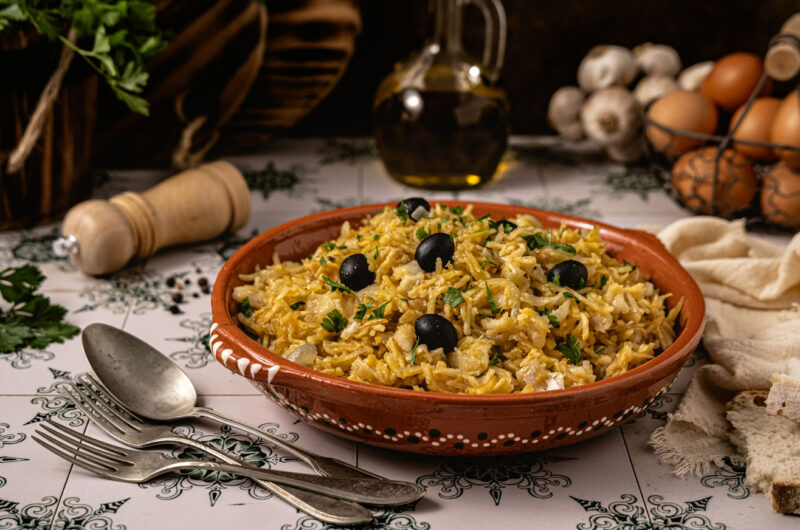

Bacalhau à Brás

Description
Bacalhau à Brás is a beloved Portuguese dish combining shredded salted cod, thin fried potatoes, eggs, and onions for a creamy, savory, and satisfying flavor.
Ingredients
- Desalted codfish (bacalhau)
- Eggs
- Onion and garlic
- Olive oil
- Thinly cut potatoes (matchstick-style)
- Parsley and black olives
- Salt and pepper
Preparation Steps
- Soak the codfish in water for 24 hours, changing the water several times, then boil and shred it.
- Fry the potato sticks until golden and crispy; set aside.
- In a pan, sauté onions and garlic in olive oil, add the shredded cod, and cook for a few minutes.
- Mix in the fried potatoes, then pour in beaten eggs, stirring gently until creamy but not overcooked.
- Garnish with chopped parsley and black olives before serving.